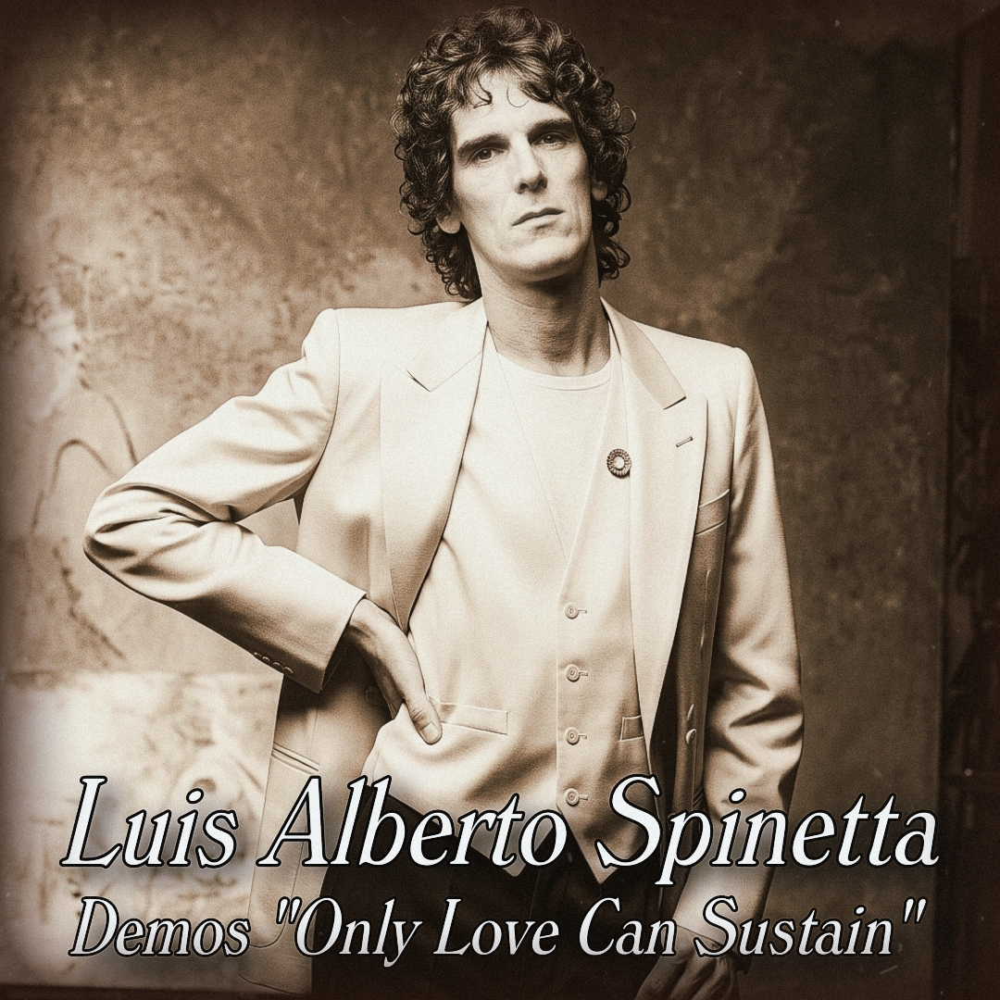

1979 - Sesiones de Pre-producción

A fines de la década del setenta, Luis Alberto Spinetta atravesaba uno de los momentos más singulares y contradictorios de su carrera. Luego de consolidarse como una de las figuras centrales del rock argentino, fue impulsado por la industria discográfica hacia un proyecto internacional que buscaba insertarlo en el mercado estadounidense. De ese intento surgió el álbum “Only Love Can Sustain” (1979), editado en Argentina como “Sólo el amor puede sostener”, grabado íntegramente en Estados Unidos con músicos de sesión y una producción ajena a su control habitual.
En ese contexto aparecen los llamados demos de “Sólo el amor puede sostener”, registros no oficiales que hoy circulan como material de archivo y que permiten asomarse al proceso creativo previo al disco definitivo. Estas grabaciones, probablemente realizadas en Argentina durante la etapa de composición o preproducción, presentan versiones más desnudas, íntimas y cercanas al lenguaje propio de Spinetta. A diferencia del álbum final los demos revelan estructuras más libres, climas más orgánicos y una interpretación más personal.
El contraste entre ambos materiales es uno de los aspectos más reveladores. Mientras que el disco oficial responde a un intento de internacionalización, los demos funcionan como un testimonio de una obra en estado inicial, donde todavía no se habían impuesto las decisiones comerciales. En ellos se percibe una continuidad estética con sus trabajos anteriores: una sensibilidad armónica compleja y una sonoridad menos estandarizada.
En este marco, los demos adquieren un valor histórico particular. No solo documentan el proceso de creación de un álbum atípico, sino que también permiten reconstruir una tensión central en la obra de Spinetta: la distancia entre su identidad artística y las exigencias de la industria.
Material difundido con fines culturales y de preservación histórica.